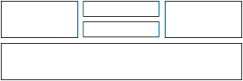
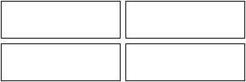
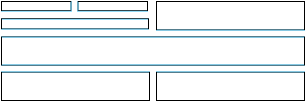

| October 21, 2000 | Panel layout |
| October 28, 2000 | Caption layout |
| up to Nov 10 or so | Various panel and caption features |
| November 12, 2000 | Rudimentary character sizing and placement |
| December 2000 | A first stab at variant structures for characters |
| January 1, 2001 | The first drawing commands, definition of named points for reference, etc. |
| April 2001 | Conversion of the original much more baroque program into a single script which outputs SVG code for ImageMagick to convert all in one fell swoop. You don't want to know how it used to be. |
| April 28, 2001 | Rework of text handling to use XML font summaries generated by my new tool ttfx. Captions again! |
| #^7nbsp; | |
| October, 2006 | Take 2: total rewrite from scratch. |
use Workflow::wftk::XML;
$toon = $ARGV[0];
$toon = 'cartoon.xml' unless $toon;
open IN, $toon or die "Can't open $toon for reading";
$input = xml_read (*IN);
close IN;
$tag = xml_attrval ($input, "tag");
die "No tag specified in cartoon definition" unless $tag;
$dir = $tag; # TODO: perhaps something more flexible.
chomp($date = `date`);
chomp($cwd = `pwd`);
system "rm -rf $dir";
mkdir $dir or die "Can't make directory $dir";
system "cp $toon $dir/cartoon.xml";
$background = xml_attrval ($input, "background");
if ($background == '') {
$panel_steps = <<EOF;
panels.xml: instance.xml
perl $cwd/build_panels.pl instance.xml > new-panels.xml
perl $cwd/synch_up.pl panels.xml new-panels.xml
EOF
} else {
system "cp $background $dir/background.gif";
$panel_steps = <<EOF;
panels.xml: instance.xml background.gif.info
perl $cwd/build_panels.pl instance.xml > new-panels.xml
perl $cwd/synch_up.pl panels.xml new-panels.xml
background.gif: cartoon.xml
perl retrieve_background.pl instance.xml
background.gif.info: background.gif
identify -format \@$cwd/identify_format.txt background.gif > background.gif.info
EOF
}
open MAKEFILE, ">$dir/Makefile";
print MAKEFILE <<"END_MAKEFILE";
# Makefile generated $date by Toon-o-Matic t2
# Contains no serviceable parts. Void where prohibited.
TAG=$tag;
TOMDIR=$cwd;
all: $dir.gif
cartoon.svg: panels.svg
perl $cwd/merge_svg.pl panels.svg panel-*.svg > new-cartoon.svg
perl $cwd/synch_up.pl cartoon.svg new-cartoon.svg
$dir.gif: cartoon.svg
convert cartoon.svg $dir.gif
cp $dir.gif ../../vivtek/pages/toonbots/current_test.gif
panels.svg: panels.xml Makefile.panels
perl $cwd/draw_panels.pl panels.xml > new-panels.svg
perl $cwd/synch_up.pl panels.svg new-panels.svg
$panel_steps
instance.xml: cartoon.xml
perl $cwd/instantiate.pl cartoon.xml > new-instance.xml
perl $cwd/synch_up.pl instance.xml new-instance.xml
Makefile.panels: panels.xml
perl $cwd/build_panel_make.pl $cwd panels.xml > Makefile.panels
make -f Makefile.panels
END_MAKEFILE
close MAKEFILE;
chdir $dir;
system "make";
exit;
|
See The layout module See Drawing (by writing SVG) |
use Workflow::wftk::XML; $toon = $ARGV[0]; $toon = 'cartoon.xml' unless $toon; open IN, $toon or die "Can't open $toon for reading"; $input = xml_read (*IN); close IN; ## TODO: processing to, y'know, instantiate. This will massage the input XML in place. print xml_string ($input); print "\n"; |
make can go on
its merry way without doing extra work.
$existing = $ARGV[0];
$new = $ARGV[1];
unless (-e $existing) {
system "mv $new $existing";
exit;
}
$diff = `diff $existing $new`;
if ($diff eq '') {
print "No change to $existing.\n";
unlink $new;
} else {
system "mv $new existing";
}
|
use Workflow::wftk::XML;
$top = shift @ARGV;
open IN, $top or die "Cannot open $top for reading";
$svg = xml_read (*IN);
close IN;
foreach $file (@ARGV) {
open IN, $file or die "Cannot open $file for reading";
$f = xml_read (*IN);
close IN;
xml_append ($svg, $f);
xml_append ($svg, xml_createtext ("\n"));
}
print xml_string ($svg) . "\n";
|
<cartoon background="littlebkgd.bmp"> <panel/> <panel> <panel/> <panel/> </panel> <panel/> <panel/> </cartoon> |  |
<cartoon background="littlebkgd.bmp" rowformat="2-2"> <panel/> <panel/> <panel/> <panel/> </cartoon> |  |
<cartoon background="littlebkgd.bmp" rowformat="2-1"> <panel> <panel> <panel/> <panel/> </panel> <panel/> </panel> <panel/> <panel/> <panel/> <panel/> </cartoon> |  |
cartoon.xml
in the main cartooning directory. This all is supposed to run in one directory, by the way,
for ease of planning.
use Workflow::wftk::XML;
$toon = $ARGV[0];
$toon = 'instance.xml' unless $toon;
open IN, $toon or die "Can't open $toon for reading";
$cartoon = xml_read (*IN);
close IN;
$panel_structure = xml_create ("cartoon");
|
if (xml_attrval ($cartoon, 'background') ne '') {
$background = 'background.gif';
die "Can't find background $background" if (!-e $background);
} else {
$background = "null:";
}
xml_set ($panel_structure, 'background', $background);
|
null: let's default to a white background.
if (xml_attrval ($cartoon, 'gradient') ne '') {
$background = "gradient:" . xml_attrval ($cartoon, 'gradient');
xml_set ($panel_structure, 'background', $background);
} elsif ($background eq 'null:') {
xml_set ($panel_structure, 'color', xml_attrval ($cartoon, 'color') eq '' ? 'white' : xml_attrval ($cartoon, 'color'));
}
|
cartoon.xml. After this phase of processing, we'll
write the resulting XML to panels.xml. (Or actually, just to stdout; the makefile will direct it to the right place.)
xml_set ($panel_structure, 'linestyle', xml_attrval ($cartoon, 'linestyle') eq '' ? 'simple' : xml_attrval ($cartoon, 'linestyle')); xml_set ($panel_structure, 'rowdir', xml_attrval ($cartoon, 'rowdir') eq '' ? 'horiz' : xml_attrval ($cartoon, 'rowdir')); xml_set ($panel_structure, 'rowformat', xml_attrval ($cartoon, 'rowformat') eq '' ? '1' : xml_attrval ($cartoon, 'rowformat')); xml_set ($panel_structure, 'border', xml_attrval ($cartoon, 'border') eq '' ? '1' : xml_attrval ($cartoon, 'border')); xml_set ($panel_structure, 'gutter', xml_attrval ($cartoon, 'gutter') eq '' ? '7' : xml_attrval ($cartoon, 'gutter')); |
identify program to glean the size of
the background (if the background is an image).
I do that in a function far below, but the results get used here.
xml_set ($panel_structure, 'panel-x', '0');
xml_set ($panel_structure, 'panel-y', '0');
if (xml_attrval ($cartoon, 'background') ne '') {
open IN, 'background.gif.info';
$info = xml_read (*IN);
close IN;
xml_set ($panel_structure, 'panel-w', xmlobj_get ($info, '', 'something')); # TODO: fix this -- even though I haven't used it in six years.
xml_set ($panel_structure, 'panel-h', xmlobj_get ($info, '', 'something'));
}
|
-size directive in the background specifier for convert to work with.
$height = 200;
$explicit_size = 0;
if (xml_attrval ($cartoon, 'height') ne '') {
$height = xml_attrval ($cartoon, 'height');
$explicit_size = 1;
}
xml_set ($panel_structure, 'panel-h', $height);
$width=500;
if (xml_attrval ($cartoon, 'width') ne '') {
$width = xml_attrval ($cartoon, 'width');
$explicit_size = 1;
}
xml_set ($panel_structure, 'panel-w', $width);
if ($explicit_size) {
$background = "-size ${width}x$height $background";
xml_set ($panel_structure, 'background', $background);
}
|
$panel_number = 0;
@panel_list = ();
# OK, scan for panels. Just to make the whole thing more baroque, I'm putting the recursive subroutine
# right in the middle of our script; more top-level processing goes on below this. Isn't that cool?
panel_scan ($cartoon, $panel_structure);
sub panel_scan {
my $parent = shift;
my $outparent = shift;
my @panels = ();
foreach (xml_elements($parent)) {
next if $$_{name} ne 'panel';
push @panels, $_;
push @panel_list, $_;
}
if (!@panels) { # There is no panel structure in this panel -- thus it is a content panel. Write it out.
open OUT, ">panel-" . xml_attrval ($outparent, 'tag') . ".xml";
print OUT xml_string ($parent) . "\n";
close OUT; # Sale on aisle 7.
return;
}
# Find actual row structure.
my @rowformat = split /-/, xml_attrval ($parent, 'rowformat');
my @actual = ($#panels + 1);
if (xml_attrval ($parent, 'rowformat')) {
my $rowoffset = 0;
my $actual_offset = 0;
$rowformat[$rowoffset] = 1 if !$rowformat[$rowoffset];
while ($actual[$actual_offset] > $rowformat[$rowoffset]) {
push @actual, $actual[$actual_offset] - $rowformat[$rowoffset];
$actual[$actual_offset] = $rowformat[$rowoffset];
$actual_offset++;
$rowoffset++;
$rowoffset = 0 if $rowoffset > $#rowformat;
$rowformat[$rowoffset] = 1 if !$rowformat[$rowoffset];
}
}
# Stash it for debugging and all-around baroqueness.
xml_set ($outparent, 'actual-rowformat', join ('-', @actual));
# Now parcel out horizontal and vertical space based on the actual row structure.
my ($row_coord, $row_width, $col_coord, $col_width);
if (xml_attrval ($parent, 'rowdir') =~ /^v/) {
$row_coord = 'panel-x';
$row_width = 'panel-w';
$col_coord = 'panel-y';
$col_width = 'panel-h';
} else {
$row_coord = 'panel-y';
$row_width = 'panel-h';
$col_coord = 'panel-x';
$col_width = 'panel-w';
}
my $rowpos = xml_attrval ($outparent, $row_coord) + xml_attrval ($outparent, 'border');
my $rowtotal = xml_attrval ($outparent, $row_width) - 2 * xml_attrval ($outparent, 'border') - 1
- (xml_attrval ($outparent, 'gutter') * (@actual - 1));
my $rowportion = $rowtotal / @actual;
my $row_len;
foreach $row_len (@actual) {
next if !$row_len;
my $colpos = xml_attrval ($outparent, $col_coord) + xml_attrval ($outparent, 'border');
my $coltotal = xml_attrval ($outparent, $col_width) - 2 * xml_attrval ($outparent, 'border') - 1
- (xml_attrval ($outparent, 'gutter') * ($row_len - 1));
my $colportion = $coltotal / $row_len;
for (my $i=0; $i < $row_len; $i++) { # Step along the row...
$r = $rowpos;
$c = $colpos;
$rowpos =~ s/\..*//; # Integer portion only -- IM doesn't render lines well if they span pixel boundaries.
$colpos =~ s/\..*//;
$r -= $rowpos;
$c -= $colpos;
my $panel = shift @panels;
my $outpanel = xml_create ("panel");
$rwidth = $rowportion + 1;
$cwidth = $colportion + 1;
$rwidth =~ s/\..*//;
$cwidth =~ s/\..*//;
if (xml_attrval ($outparent, 'rowdir') eq 'horiz') {
$max = xml_attrval ($outparent, $row_coord) + xml_attrval ($outparent, $row_width);
if ($rowpos + $rwidth > $max) { $rwidth = $max - $rowpos; }
$max = xml_attrval ($outparent, $col_coord) + xml_attrval ($outparent, $col_width);
if ($colpos + $cwidth > $max) { $cwidth = $max - $colpos; }
}
xml_set ($outpanel, $row_coord, $rowpos);
xml_set ($outpanel, $col_coord, $colpos);
xml_set ($outpanel, $row_width, $rwidth);
xml_set ($outpanel, $col_width, $cwidth);
xml_set ($outpanel, 'linestyle', xml_attrval ($panel, 'linestyle'));
xml_set ($outpanel, 'linestyle', xml_attrval ($outparent, 'linestyle')) if xml_attrval ($outpanel, 'linestyle') eq '';
xml_set ($outpanel, 'arrow', xml_attrval ($panel, 'arrow')); # Added 2006-10-25.
xml_set ($outpanel, 'fill', xml_attrval ($panel, 'fill')); # Added 2006-10-25.
xml_set ($outpanel, 'svg-transform', xml_attrval ($panel, 'svg-transform')); # Added 2006-10-29.
$panel_number++;
if (xml_attrval ($outpanel, 'name') eq '') {
xml_set ($outpanel, 'name', "panel$panel_number");
}
xml_set ($outpanel, 'tag', $panel_number);
xml_set ($outpanel, 'rowdir', xml_attrval ($panel, 'rowdir'));
if (!xml_attrval ($outpanel, 'rowdir')) {
if (xml_attrval ($outparent, 'rowdir') =~ /^v/) {
xml_set ($outpanel, 'rowdir', 'horiz');
} else {
xml_set ($outpanel, 'rowdir', 'vert');
}
}
xml_set ($outpanel, 'gutter', xml_attrval ($panel, 'gutter'));
xml_set ($outpanel, 'gutter', xml_attrval ($outparent, 'gutter')) if !xml_attrval ($outpanel, 'gutter');
xml_append_pretty ($outparent, $outpanel);
my $panel_list_length = $#panel_list;
panel_scan ($panel, $outpanel);
if ($panel_list_length != $#panel_list) {
# Using a side effect is baroque, isn't it?
xml_set ($outpanel, 'linestyle', 'none');
}
$colpos += $c + $colportion + xml_attrval ($outparent, 'gutter');
}
$rowpos += $r + $rowportion + xml_attrval ($outparent, 'gutter');
}
}
|
foreach $panel (@panel_list) {
# Background color or gradient.
$gradient = '';
if (xml_attrval ($panel, 'color') ne '') {
$gradient = xml_attrval ($panel, 'color') . '-' . xml_attrval ($panel, 'color');
}
if (xml_attrval ($panel, 'gradient') ne '') {
$gradient = xml_attrval ($panel, 'gradient');
}
next if $gradient eq '';
print "Creating background image for " . xml_attrval ($panel, 'name') . "\n";
xml_set ($panel, 'background', xml_attrval ($panel, 'name') . "-bg.gif");
system "convert -size " . xml_attrval ($panel, 'panel-w') . "x" . xml_attrval ($panel, 'panel-h') . " gradient:$gradient " . xml_attrval ($panel, 'background');
}
|
print xml_string ($panel_structure); print "\n"; |
use Workflow::wftk::XML; $cwd = $ARGV[0]; $toon = $ARGV[1]; $toon = 'instance.xml' unless $toon; open IN, $toon or die "Can't open $toon for reading"; $panels = xml_read (*IN); close IN; chomp($date = `date`); |
scan_panels ($panels);
sub scan_panels {
my $panel = shift;
foreach $elem (xml_elements ($panel)) {
next unless ($$elem{name} eq 'panel');
$x{xml_attrval ($elem, 'tag')} = xml_attrval ($elem, 'panel-x');
$y{xml_attrval ($elem, 'tag')} = xml_attrval ($elem, 'panel-y');
$w{xml_attrval ($elem, 'tag')} = xml_attrval ($elem, 'panel-w');
$h{xml_attrval ($elem, 'tag')} = xml_attrval ($elem, 'panel-h');
scan_panels ($elem);
}
}
@panel_list = sort { $a <=> $b } keys (%x);
|
$makes = '';
$panels_list = '';
foreach $panel (@panel_list) {
open IN, "panel-$panel.xml";
$pxml = xml_read (*IN);
close IN;
@svgs = ();
$caption_count = 0;
foreach $elem (xml_elements ($pxml)) {
if (xml_name ($elem) eq 'caption') {
$caption_count += 1;
$tag = "caption-$panel-$caption_count";
$rotate = 0;
$direction = xml_attrval ($elem, "direction");
if ($direction eq "up") {
$rotate = 270;
} elsif ($direction eq "down") {
$rotate = 90;
} elsif ($direction eq "inverted") {
$rotate = 180;
} else {
$rotate = xml_attrval ($elem, "rotate");
}
if ($rotate == 0) {
$makes .= <<"END_MAKE";
$tag.info: $tag.xml
perl $cwd/draw_caption.pl $tag.xml no-info $w{$panel} $h{$panel} 0 > $tag-raw.svg
convert -trim $tag-raw.svg $tag.gif
identify -format \@$cwd/identify_format.txt $tag.gif > $tag.info
$tag.svg: $tag.info
perl $cwd/draw_caption.pl $tag.xml $tag.info $w{$panel} $h{$panel} 0 > $tag.svg
END_MAKE
} else {
$makes .= <<"END_MAKE";
$tag.info: $tag.xml
perl $cwd/draw_caption.pl $tag.xml no-info $w{$panel} $h{$panel} 0 > $tag-raw.svg
convert -trim $tag-raw.svg $tag-raw.gif
identify -format \@$cwd/identify_format.txt $tag-raw.gif > $tag.info
$tag-r$rotate.info: $tag.xml $tag.info
perl $cwd/draw_caption.pl $tag.xml $tag.info 0 0 0 > $tag-boxed.svg
convert -trim $tag-boxed.svg $tag-boxed.gif
convert -rotate $rotate $tag-boxed.gif $tag-r$rotate.gif
identify -format \@$cwd/identify_format.txt $tag-r$rotate.gif > $tag-r$rotate.info
$tag.svg: $tag-r$rotate.info
perl $cwd/draw_caption.pl $tag.xml $tag-r$rotate.info $w{$panel} $h{$panel} $rotate > $tag.svg
END_MAKE
}
push @svgs, "$tag.svg";
open OUT, ">$tag.xml";
print OUT xml_string ($elem) . "\n";
close OUT;
}
}
next unless @svgs;
$panels_list .= " panel-$panel.svg";
$svg_makes = '';
foreach $s (@svgs) { $svg_makes .= " $s"; }
$makes .= <<"END_MAKE";
panel-$panel.svg: $svg_makes;
perl $cwd/build_panel_g.pl panel-$panel.xml $x{$panel} $y{$panel} > panel-$panel-g.svg
perl $cwd/merge_svg.pl panel-$panel-g.svg $svg_makes > new-panel-$panel.svg
perl $cwd/synch_up.pl panel-$panel.svg new-panel-$panel.svg
END_MAKE
}
|
print <<"END_MAKEFILE"; # Panel Makefile generated $date by Toon-o-Matic t2 # Contains no serviceable parts. Batteries not included. # Void in NH, VT, and U.S. Minor Outlying Islands. TOMDIR=$cwd; all: $panels_list $makes END_MAKEFILE |
$panel = $ARGV[0]; print " |
use Workflow::wftk::XML;
$in = $ARGV[0];
$in = 'panels.xml' unless $in;
open IN, $in or die "Can't open $in for reading";
$panels = xml_read (*IN);
close IN;
$svg = xml_create ("svg");
xml_append ($svg, xml_createtext("\n"));
xml_set ($svg, "height", xml_attrval ($panels, "panel-h"));
xml_set ($svg, "width", xml_attrval ($panels, "panel-w") + 2); # Note: adding 2 because of odd clipping behavior.
if (xml_attrval ($panels, "image") ne '') {
$cmd = xml_create ("image");
xml_set ($cmd, "xlink:href", xml_attrval ($panels, "image"));
xml_set ($cmd, "x", "0");
xml_set ($cmd, "y", "0");
xml_append ($svg, $cmd);
xml_append ($svg, xml_createtext("\n"));
} elsif (xml_attrval ($panels, "color") ne '') {
$cmd = xml_create ("rect");
xml_set ($cmd, "height", xml_attrval ($panels, "panel-h"));
xml_set ($cmd, "width", xml_attrval ($panels, "panel-w"));
xml_set ($cmd, "style", "fill: " . xml_attrval ($panels, 'color'));
xml_append ($svg, $cmd);
xml_append ($svg, xml_createtext("\n"));
}
|
$p{'dummy'} = '';
$s{'dummy'} = '';
$x{'dummy'} = 0;
$y{'dummy'} = 0;
$w{'dummy'} = 0;
$h{'dummy'} = 0;
$on_top_of{'dummy'} = 0;
scan_panels ($panels);
sub scan_panels {
my $panel = shift;
foreach $elem (xml_elements ($panel)) {
next unless ($$elem{name} eq 'panel');
$p{xml_attrval ($elem, 'tag')} = $elem;
$x{xml_attrval ($elem, 'tag')} = xml_attrval ($elem, 'panel-x');
$y{xml_attrval ($elem, 'tag')} = xml_attrval ($elem, 'panel-y');
$w{xml_attrval ($elem, 'tag')} = xml_attrval ($elem, 'panel-w');
$h{xml_attrval ($elem, 'tag')} = xml_attrval ($elem, 'panel-h');
$s{xml_attrval ($elem, 'tag')} = '';
$on_top_of{xml_attrval ($elem, 'tag')} = '';
scan_panels ($elem);
}
}
|
draw_panels ($panels);
sub draw_panels {
my $panel = shift;
foreach $elem (xml_elements ($panel)) {
next unless ($$elem{name} eq 'panel');
my $tag = xml_attrval ($elem, 'tag');
# Background image, if any.
if (xml_attrval ($elem, 'background') ne '') {
$cmd = xml_create ("image");
xml_set ($cmd, "xlink:href", xml_attrval ($elem, "background"));
xml_set ($cmd, "x", xml_attrval ($elem, 'panel-x'));
xml_set ($cmd, "y", xml_attrval ($elem, 'panel-y'));
xml_set ($cmd, "width", xml_attrval ($elem, 'panel-w'));
xml_set ($cmd, "height", xml_attrval ($elem, 'panel-h'));
xml_append ($svg, $cmd);
xml_append ($svg, xml_createtext("\n"));
}
# Now the panel's polyline, if any.
$line = ''; $fill = '';
$style = xml_attrval ($elem, 'color');
$fill = xml_attrval ($elem, 'fill');
$style = "fill:$fill" if $fill ne '';
$style = 'fill:none' if $fill eq 'none' || $fill eq '';
if (xml_attrval ($elem, 'linestyle') ne 'none') {
$style .= '; ' if $style ne '';
$color = xml_attrval ($elem, 'color');
$color = xml_attrval ($elem, 'stroke') if $color;
$color = 'black' if $color eq '';
$line = xml_attrval ($elem, 'line');
$line = xml_attrval ($elem, 'stroke-width') if $line eq '';
$line = '1' if $line eq '';
$style .= "stroke:$color; stroke-width:$line";
}
if ($style ne '') {
my $arrow = xml_attrval ($elem, "arrow");
my $x1 = xml_attrval ($elem, 'panel-x');
my $y1 = xml_attrval ($elem, 'panel-y');
my $w = xml_attrval ($elem, 'panel-w');
my $h = xml_attrval ($elem, 'panel-h');
my $x2 = $x1 + $w;
my $y2 = $y1 + $h;
if ($arrow eq 'next') {
if (!xml_is_element ($p{$tag+1})) {
$arrow = '';
} else {
$xdelta = $x{$tag+1} - $x{$tag};
$ydelta = $y{$tag+1} - $y{$tag};
if ($xdelta > 0 && $xdelta > $ydelta) {
$arrow = 'right';
} elsif ($xdelta < 0 && $xdelta < $ydelta) {
$arrow = 'left';
} elsif ($ydelta > 0) {
$arrow = 'bottom';
} elsif ($ydelta < 0) {
$arrow = 'top';
} else {
$arrow = '';
}
}
}
$cmd = xml_create ("polyline");
$s{$tag} = $cmd;
xml_set ($cmd, "transform", xml_attrval ($elem, 'svg-transform'));
xml_set ($cmd, 'style', $style);
xml_set ($cmd, 'arrow', $arrow);
$awidth = 50;
$alength = 50;
if ($arrow eq 'top') {
$midpoint = $x1 + $w/2;
$abase1 = $midpoint - $awidth/4;
$abase2 = $midpoint + $awidth/4;
$atip = $y1 - $alength;
$aflare = $y1 - $alength/2;
$aflank1 = $midpoint - $awidth/2;
$aflank2 = $midpoint + $awidth/2;
$atip_x = $midpoint;
$atip_y = $atip;
$points = "$x1,$y1 $abase1,$y1 $abase1,$aflare $aflank1,$aflare $midpoint,$atip ";
$points .= "$aflank2,$aflare $abase2,$aflare $abase2,$y1 $x2,$y1 $x2,$y2 $x1,$y2 $x1,$y1";
} elsif ($arrow eq 'bottom') {
$midpoint = $x1 + $w/2;
$abase1 = $midpoint - $awidth/4;
$abase2 = $midpoint + $awidth/4;
$atip = $y2 + $alength;
$aflare = $y2 + $alength/2;
$aflank1 = $midpoint - $awidth/2;
$aflank2 = $midpoint + $awidth/2;
$atip_x = $midpoint;
$atip_y = $atip;
$points = "$x1,$y1 $x2,$y1 $x2,$y2 $abase2,$y2 $abase2,$aflare $aflank2,$aflare ";
$points .= "$midpoint,$atip $aflank1,$aflare $abase1,$aflare $abase1,$y2 $x1,$y2 $x1,$y1";
} elsif ($arrow eq 'left') {
$midpoint = $y1 + $h/2;
$abase1 = $midpoint - $awidth/4;
$abase2 = $midpoint + $awidth/4;
$atip = $x1 - $alength;
$aflare = $x1 - $alength/2;
$aflank1 = $midpoint - $awidth/2;
$aflank2 = $midpoint + $awidth/2;
$atip_x = $atip;
$atip_y = $midpoint;
$points = "$x1,$y2 $x2,$y1 $x2,$y2 $x1,$y2 $x1,$abase2 $aflare,$abase2 $aflare,$aflank2 ";
$points .= "$atip,$midpoint $aflare,$aflank1 $aflare,$abase1 $x1,$abase1 $x1,$y1";
} elsif ($arrow eq 'right') {
$midpoint = $y1 + $h/2;
$abase1 = $midpoint - $awidth/4;
$abase2 = $midpoint + $awidth/4;
$atip = $x2 + $alength;
$aflare = $x2 + $alength/2;
$aflank1 = $midpoint - $awidth/2;
$aflank2 = $midpoint + $awidth/2;
$atip_x = $atip;
$atip_y = $midpoint;
$points = "$x1,$y1 $x2,$y1 $x2,$abase1 $aflare,$abase1 $aflare,$aflank1 $atip,$midpoint ";
$points .= "$aflare,$aflank2 $aflare,$abase2 $x2,$abase2 $x2,$y2 $x1,$y2 $x1,$y1";
} else {
$points = "$x1,$y1 $x2,$y1 $x2,$y2 $x1,$y2 $x1,$y1";
$atip_x = 0;
$atip_y = 0;
}
xml_set ($cmd, "points", $points);
if ($atip_x != 0 && $atip_y != 0) {
foreach $otag (keys(%p)) {
next if $tag eq $otag;
if ($atip_x > $x{$otag} &&
$atip_x < $x{$otag} + $w{$otag} &&
$atip_y > $y{$otag} &&
$atip_y < $y{$otag} + $h{$otag}) {
$on_top_of{$tag} .= " $otag ";
}
}
}
}
draw_panels ($elem); # Now we draw the panel's contents onto the panel.
}
}
|
sub on_top_of {
return 1 if $on_top_of{$a} =~ / $b /;
return -1 if $on_top_of{$b} =~ / $a /;
return 0;
}
foreach $tag (sort on_top_of keys(%s)) {
xml_append_pretty ($svg, $s{$tag}) if xml_is_element ($s{$tag});
}
print xml_string ($svg) . "\n";
|
use Workflow::wftk::XML;
$in = $ARGV[0];
$info = $ARGV[1];
$panel_w = $ARGV[2];
$panel_h = $ARGV[3];
$rotate = $ARGV[4];
open IN, $in or die "Can't open $in for reading";
$in = xml_read (*IN);
close IN;
$string = xml_stringcontent ($in);
$string =~ s/\n//g;
$string =~ s/<br\/>/\n/g;
sub make_style {
$color = xml_attrval ($in, 'color');
$color = xml_attrval ($in, 'fgcolor') unless $color;
$color = 'black' unless $color;
$size = xml_attrval ($in, 'size');
$size = 16 unless $size;
$stroke = xml_attrval ($in, 'stroke');
$stroke = 'none' unless $stroke;
$family = xml_attrval ($in, 'font');
$family = 'verdana' unless $family;
$style = xml_attrval ($in, 'style');
$style = "; $style" if $style;
foreach $attr ('text-decoration', 'font-weight', 'font-style') {
my $v = xml_attrval ($in, $attr);
if ($v) { $style .= "; $attr:" . $v; }
}
return "font-family:\@fonts/$family.ttf; font-size:$size; fill:$color; stroke:$stroke$style";
}
sub copy_text_attributes {
my ($text, $in) = @_;
foreach $attr ('text-decoration', 'font-weight', 'font-style') {
xml_set ($text, $attr, xml_attrval ($in, $attr));
}
}
if ($info eq 'no-info') {
# First run through.
$svg = xml_create ('svg');
xml_set ($svg, 'width', $panel_w);
xml_set ($svg, 'height', $panel_h);
$text = xml_create ('text');
xml_set ($text, 'x', '0');
xml_set ($text, 'y', '0');
xml_set ($text, 'style', make_style ($in));
#copy_text_attributes ($text, $in);
xml_append ($text, xml_createtext ($string));
xml_append_pretty ($svg, $text);
print xml_string ($svg) . "\n";
exit;
}
# Second or third run through, we have an info file from 'identify'.
open IN, $info or die "Can't open $info for reading";
$info = xml_read (*IN);
close IN;
if ($rotate) {
# if the info file is from a rotated graphic, third time through.
$h = xml_attrval ($info, 'height');
$w = xml_attrval ($info, 'width');
$svg = xml_create ('g');
$image = xml_create ('image');
xml_set ($image, 'x', '0');
xml_set ($image, 'y', '0');
xml_set ($image, 'height', $h);
xml_set ($image, 'width', $w);
xml_set ($image, 'xlink:href', xml_attrval ($info, 'file'));
if ($rotate == 90 || $rotate == 180 || $rotate == 270) {
# If the rotation is to a right angle, no need to clip. Just place the image and go on.
xml_append_pretty ($svg, $image);
} else {
# This is hard, so I'm not doing it yet. It requires trigonometry, and my brain hurts from it.
xml_append_pretty ($svg, $image);
}
} else {
# Second time through: draw text straight, with box.
$margin = xml_attrval ($in, 'box-margin');
$margin = 2 unless $margin;
$size = xml_attrval ($in, 'size');
$size = 16 unless $size;
$h = xml_attrval ($info, 'height') + $margin*2 + $size; # Font size correction because trimming cuts off at top as well...
$w = xml_attrval ($info, 'width') + $margin*2 + $size;
# Now build the SVG for the overall caption.
$svg = xml_create ('g');
$text = xml_create ('text');
xml_set ($text, 'x', $margin + $size/2);
xml_set ($text, 'y', $margin);
xml_set ($text, 'style', make_style ($in));
#copy_text_attributes ($text, $in);
xml_append ($text, xml_createtext ($string));
$box = xml_create ('rect');
xml_set ($box, 'x', '0');
xml_set ($box, 'y', '0');
xml_set ($box, 'width', $w);
xml_set ($box, 'height', $h);
$stroke = xml_attrval ($in, 'box-stroke');
$stroke = 'black' unless $stroke;
$width = xml_attrval ($in, 'box-line');
$width = '1' unless $width;
$fill = xml_attrval ($in, 'box-fill');
$fill = 'white' unless $fill;
$style = xml_attrval ($in, 'box-style');
$style = "; $style" if $style;
if (xml_attrval ($in, 'box') eq 'no') {
$stroke = 'none';
$fill = 'none';
}
xml_set ($box, 'style', "stroke:$stroke; stroke-width:$width; fill:$fill$style");
xml_append_pretty ($svg, $box);
xml_append_pretty ($svg, $text);
# If there is a direction, we rotate the text by a certain number of degrees and if the text is now vertical we need to
# swap its height and width for location calculation.
# November 1, 2006 - doesn't work due to IM bugs. Someday we might want to revisit this; it generates good SVG and SHOULD work.
#$direction = xml_attrval ($in, 'direction');
#$rotated = 0;
#$midpoint = ($w/2) . "," . ($h/2);
#$negmidpoint = (-$w/2) . "," . (-$h/2);
#if ($direction eq 'up') {
# ($h, $w) = ($w, $h);
# $rotated = 1;
# xml_set ($svg, 'transform', "translate($midpoint) rotate(-90) translate($negmidpoint)");
#} elsif ($direction eq 'down') {
# ($h, $w) = ($w, $h);
# $rotated = 1;
# xml_set ($svg, 'transform', "translate($midpoint) rotate(90) translate($negmidpoint)");
#} elsif ($direction eq 'inverted') {
# $rotated = 1;
# xml_set ($svg, 'transform', "translate($midpoint) rotate(180) translate($negmidpoint)");
#}
#
#if (xml_attrval ($in, 'rotate')) { # Arbitrary rotation -- doesn't affect placement (I don't care about it *that* much)
# $rotated = 1;
# $rotation = xml_attrval ($in, 'rotate');
#
# $svg = transform_svg ($svg, "translate($negmidpoint)");
# $svg = transform_svg ($svg, "rotate($rotation)");
# $svg = transform_svg ($svg, "translate($midpoint)");
#}
#
#if ($rotated) {
# $midgroup = $svg;
# $svg = xml_create ('g');
# xml_append_pretty ($svg, $midgroup);
#}
}
# Now figure out the location on the panel and set a transformation on the overall 'g' (group) tag, and output that puppy, it's done.
# Caveat: if the panel width and height are 0, then this is the second time through and there will be a third time. Act accordingly.
if ($panel_h == 0 && $panel_w == 0) {
$g = $svg;
xml_set ($g, 'transform', 'translate(5,5)');
$svg = xml_create ("svg");
xml_set ($svg, 'height', $h+10);
xml_set ($svg, 'width', $w+10);
xml_append_pretty ($svg, $g);
} else {
xml_set ($svg, 'transform', "translate(" . calculate_location (xml_attrval ($in, 'location'), $h, $w, $panel_h, $panel_w) . ")");
}
print xml_string ($svg) . "\n";
sub transform_svg {
my ($svg, $t) = @_;
my $s = xml_create ("g");
xml_append_pretty ($s, $svg);
xml_set ($s, 'transform', $t);
return $s;
}
sub calculate_location {
my ($location, $h, $w, $panel_h, $panel_w) = @_;
if ($panel_h == 0 && $panel_w == 0) { return "0,0"; }
my $x;
my $y;
my @loc = split /,/, $location;
if ($loc[0] =~ /^top/) {
$y = 0;
} elsif ($loc[0] =~ /^middle/ || $loc[0] =~ /^center/) {
$y = int(($panel_h - $h) / 2);
} else {
$y = $panel_h - $h;
}
if ($loc[0] =~ /right$/) {
$x = $panel_w - $w;
} elsif ($loc[0] =~ /middle$/ || $loc[0] =~ /center$/) {
$x = int(($panel_w - $w) / 2);
} else {
$x = 0;
}
shift @loc;
foreach my $offset (@loc) {
$offset =~ s/^ *//;
my @o = split / /, $offset;
if ($o[0] eq 'up') {
$y -= $o[1];
} elsif ($o[0] eq 'down') {
$y += $o[1];
} elsif ($o[0] eq 'left') {
$x -= $o[1];
} elsif ($o[0] eq 'right') {
$x += $o[1];
}
}
return "$x,$y";
}
|
| This code and documentation are released under the terms of the GNU license. They are additionally copyright (c) 2001-2006, Vivtek. All rights reserved except those explicitly granted under the terms of the GNU license. This presentation prepared using LPML. Try literate programming. You'll like it. |